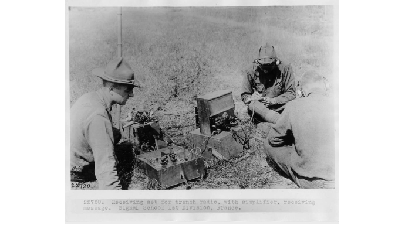
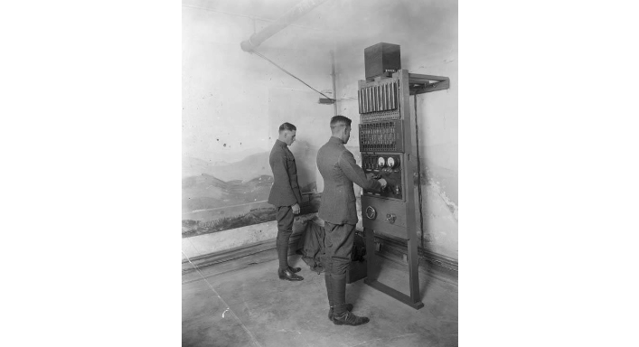
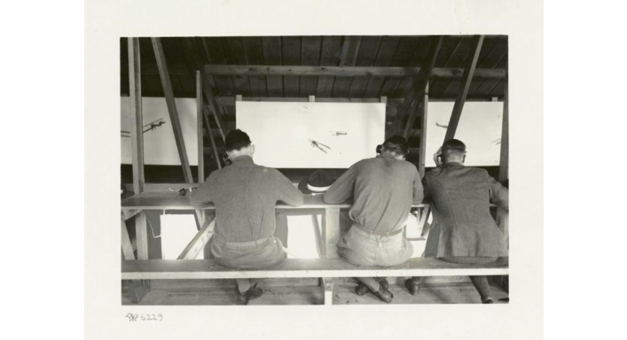
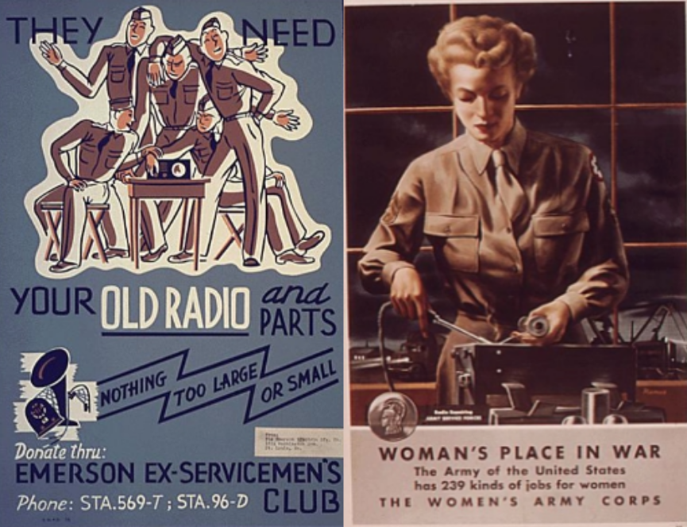
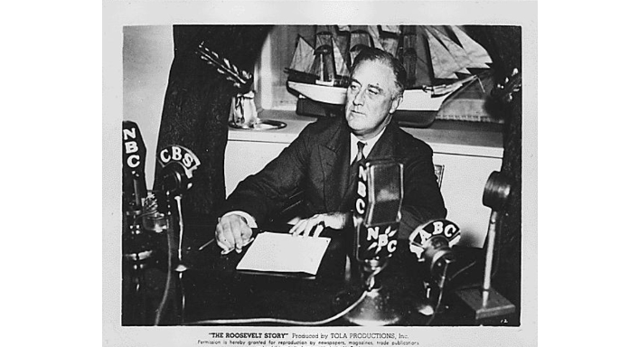

Radio during World War 1
At the onset of World War I, radio was still in its infancy. Army equipment was primitive, had a very short range, and often negotiated atmospheric interference. A 1913 aircraft with a radio, at the time considered cutting-edge equipment, had a maximum range of 2,000 yards. Military radio equipment also used vacuum tubes, which were heavy and bulky. As a result, the equipment was difficult to tote around on the battlefield, even on mules and horses, which were still the military’s primary mode of equipment transportation. The American army made some adaptations with the development of a "horse-pack set," which used a hand generator and was strapped to the side of a horse. The entire radio transmitter and receiver, in size and design, resembled a saddle.
Still, this did not solve all of radio’s challenges. During the First World War, radio transmissions were often less reliable than using wired telephones or telegraphs. Radio really found a foothold, however, at sea, even before the United States’ direct involvement in World War I. President Wilson’s 1914 Executive Order allowed the Navy to censor international telegrams sent or received via radio. Though many, including the Marconi Wireless Company of America, vehemently challenged the censorship ban, it stuck, and so began the Navy’s heavy involvement with wartime radio. Navy radio stations, which had higher powered signals than those sent out on the frontlines, were able to relay timely wartime news to vessels at sea. There was some experimentation with troop entertainment via radio transmission, too, with broadcasts aimed at Navy ships at sea and wounded sailors recovering in hospitals. It is telling that the U.S. Navy press sent its final dispatch of the war, announcing armistice on November 11, 1918, via radio transmission.
Radio during World War 2
Radio was the cheapest form of
entertainment, and it was the most popular medium during World War II. The
accessibility and availability meant it fueled propaganda and could reach a
large number of citizens. Radio helped entertain and inform the population,
encouraging citizens to join in the war effort.
One of the most popular shows in Britain during the time, Tommy Handley's It's
That Man Again was able to reach up to 40% of the British population. However,
the success of radio propaganda during World War I, went on to inspire fascist
and social regimes during World War II. Effective radio propaganda arrived in
the form of news reports by Edward. R. Murrow. He covered the Battle of Britain
and nightly bombing raids in London, with his vivid imagery capturing the
nation’s imaginations.

In America, broadcasting was offered twenty-four
hours a day in an effort to keep citizens engaged, and 90% of American families
owned a radio during World War II. However, propaganda was not well received,
reminding citizens of the efforts used in World War I. This led President Roosevelt
and others to attempt to convince the people that the government was not out to
censor information but inform the public. One of the most successful radio program
methods the American government used was the “you technique”. This method put the
listener directly in situations like battle or being in a military camp by
addressing them personally.
In Nazi Germany, radio was an important propaganda tool. Just a few short months
after the outbreak of World War II, German propagandists were transmitting close to
11 hours of programming a day, with the majority of the transmissions in English as
well. Their focus was on eroding the pro-British sentiment, and propagandists also
focused on certain groups such as capitalists, Jews, and specific newspapers and
politicians.

Joseph Goebbels, German propaganda minister, called the radio the “eighth great power”, noting the influence of radio in promoting the Third Reich. Goebbels approved a mandate in which millions of cheap radio sets were subsidized by the government and distributed to citizens. Germans also delivered their messages to occupied territories and enemy states. One of their main targets was the United Kingdom where William Joyce (Lord Haw-Haw) regularly broadcasted. In the United States, there were Robert Henry Best and Mildred Gillars (Axis Sally).
Radio on the homefront in WWII
As radio made its impact on the World War II battlefields, it became essential for Americans tuning in at home. For the first time, families listening in heard wartime news in real time. On September 3, 1939, radio listeners heard Britain and France declare war on Germany and speeches by the UK Prime Minister and U.S. President Roosevelt as they happened. When the United States officially entered the war after the Japanese attack on Pearl Harbor in December 1941, listeners got an even fuller picture of what life was like on the battlefront. Most notably, award-winning journalist Edward R. Murrow became part of CBS News' efforts to bring the realities of the war back home through on-the-ground radio reporting. Murrow became famous for reporting live from London during the nine-month Nazi bombing campaign called the "Blitz."
Radio addresses from the front were coupled with broadcasts from leaders of the warring nations. Roosevelt’s fireside chats, which began in 1933 and lasted until 1944, became an intimate way for the president to directly communicate with radio listeners across the United States. During the war, the president was able to speak about the declaration of war and its progress, the US economy, and the movement toward peace. The concept and format allowed listeners to feel like the president was in their homes talking to them, letting them know they were going to make it through some of the nation’s toughest times.
The war also influenced radio entertainment broadcasts, becoming a topic in radio serials and soap operas, often with racially charged caricatures of the Axis powers playing the villains. Government-sponsored broadcasts featured Hollywood celebrities sharing the virtues of collecting scrap metal and planting Victory gardens. Children’s programming was no exception. Boys and girls listening to the popular Dick Tracy series were urged to fight the enemy by pledging to save water, gas and electricity, and to "save my playthings" as well as "Mom's furniture."


Anonymous Reply
Precise info. noice